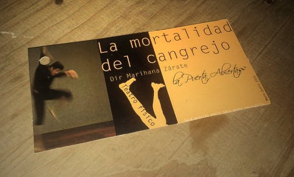

Pues bien, la obra en cuestión tiene por nombre «La Mortalidad del Cangrejo», protagonizada por Alfredo Espinoza y Alejandro León. Los textos de la obra están basados en escritos de Salvador Elizondo, un escritor y crítico literario quien recibió además el Premio Nacional de Ciencias y Artes en el área de Lingüística y Literatura en 1990. La adaptación de los textos al formato de «teatro físico» (que describiré más adelante) corrió a cargo de Marihana Zárate, quien dirige la obra.
n un interesante giro de formatos, este teatro físico al que me refiero es una auténtica delicia al ojo del espectador, aunque lo visual de la obra no pretende rivalizar con el contenido del texto. Mientras se juega mucho con los conceptos de lo ultraterrenal, la vida después de la muerte y la eternidad, estas frases pueden en un principio antojarse complicadas y difíciles de contextualizar por sí solas. Hay una lucha de por medio entre la asimilación de los diálogos y la atención de la expresión física en escena. Para ponernos en contexto, el teatro físico es una forma más visual del teatro, que tiene muchos fundamentos en la danza contemporánea; por lo tanto, el teatro físico, por su vanguardismo y bases, se considera también teatro contemporáneo. El lengua corporal es protagónico en este tipo de interpretación; se busca que sea el mismo cuerpo el que tenga la misión y tarea de la evocación; no se pretende caer en simbolismos banales ni analogías panfletarias; es más bien una lucha corpórea de resistencia y perseverancia, es un ejercicio constante que va de lo rudo, lo brusco, lo rígido y lo tenso, a lo suave, lo poético, la danza elegante y los movimiento refinados. Requiere, por ello, una disciplina física intensa, mucha preparación, una gran memoria muscular y una psicomotricidad muy elaborada para concretar los movimientos y efectos que indique el guión y que acompañen armónicamente al texto. Marihana Zárate tiene en su haber dos diplomados del INBA en Actualización Dancística; ésto, mas una instrucción formal con múltiples maestros y talleres en distintas disciplinas físicas, como danza, ballet, acrobacia, mímica, entre otras, le dan las bases teóricas y físicas necesarias para elaborar la adaptación que vemos en escena. Por otro lado, Alfredo Espinoza y Alejandro León son actores de grandes aptitudes físicas que, aunque aún se inician formalmente en el teatro, llevan una trayectoria en franco crecimiento y están generando expectativas cada vez más altas (que han sabido mantener). No solo están forjándose como grandes actores, como lo han demostrado en ésta y obras anteriores; también han sabido responder a las altas exigencias de rendimiento, acrobacia y danza que la obra propone. Es una labor titánica; parte de la mente está puesta en el texto, en la dicción, la gesticulación, la modulación de la voz; la otra mitad de la mente está puesta en la concentración, balance, equilibrio, coreografía y sincronía necesarias para, no solo presentar una obra decorosamente, sino además, no sufrir un altercado físico, una caída o una lesión, que hagan detener la presentación o incluso inhabilitarlos para futuras puestas. Tiene pues, La Mortalidad del Cangrejo, un poco de riesgo lírico, un poco de riesgo físico, y mucho de trampa lúdica. La presentación está debidamente «seteada» (montada, arreglada, preparada y con los efectos necesarios dispuestos durante la obra) por Sven Merzbach (multimedia) y Jorge A. Zárate (iluminación). Jorge Zárate es además el director de La Puerta Abierta, y es el responsable de la formación tanto de los actores en su lados histriónicos y físicos, así como de la formación de Marihana Zárate, su hija. «La Mortalidad del Cangrejo» es una obra disfrutable, compleja, pero cómoda de ver (si se deja de lado que el espectador puede llegar a sufrir empáticamente al ver las complejas y difíciles maniobras físicas de los actores). Es apta para toda la familia, aunque sus textos pueden llegar a confundir al público joven. De todos modos, si no por el texto, bien vale la pena ver las destrezas y suertes de acrobacias de los actores, que dan muestra de la intensa preparación y meticulosas coreografías a las que se sometieron para garantizar la calidad de la presentación. Altamente recomendable, claro que sí; además, es más rico disfrutar la obra con algunas de las bebidas que se ofrecen minutos antes de la presentación (café, horchata, etcétera). Después de una obra así, es grato (y antojable) descender de las gradas para acercarse a los actores y la directora, quienes humilde y alegremente, intercambiarán puntos de vista y hablarán de sus experiencias con quien se acerque a saludarlos; son los actores, pues, seres muy humanos que expresan una cálida gratitud hacia quien desee reunirse con ellos tras la presentación. Y de verdad, es una actividad imperdible; si la obra se ha disfrutado, nada más constructivo para el alma que irse a platicar y reír con los actores. Después del telón, son personas con mucho que contar. En conclusión; vayan: vean «La Mortalidad del Cangrejo», dirigida por Marihana Zárate y protagonizada por Alfredo Espinoza y Alejandro León. La van a disfrutar; además, es una buena forma de asegurar la continuidad de la propuesta artística local, que a pesar de las adversidades, no pierde su calidad y se niega a morir. Un gran saludo y abrazo a todos. Hasta la próxima. :)
